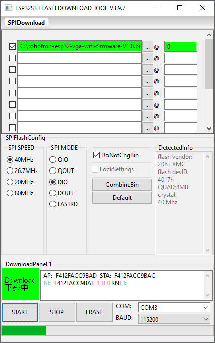

Hinweise zum Flashen der Firmware
1. Die "Flash Download Tools" von Espressif herunterladen und auspacken.
2. Ein Firmware-Image herunterladen.
3. Den Robotron-ESP-Adapter am USB anstöpseln. Den BOOT Jumper vor dem Flashen NICHT stecken!
Beim ersten Mal wird Windows ein neues Gerät finden
4. Gegebenenfalls im Gerätemanager überprüfen welcher COM-Port das ist.

5. Das Flash-Programm starten.
6. "ESP32S3" und "USB" auswählen
7. "OK" klicken
8. Erste Zeile anhaken, Firmware-Image anwählen, Startadresse "0" eintragen, COM-Port auswählen.
9. "Start" klicken, warten

10. Flash fertig
11. Den Robotron-ESP-Adapter vom USB abziehen, den BOOT-Jumper stecken (=Schreibschutz). Danach ist der Adapter betriebsbereit.
Zurück zur Hauptseite